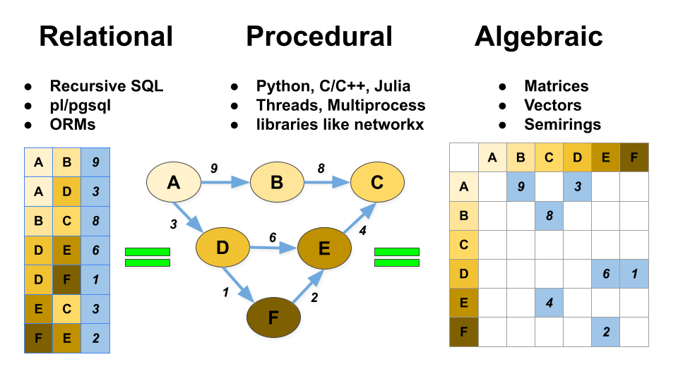

Matrix Documentation
This documentation is also tests for the code, the examples below show the literal output of these statements from Postgres.
Some setup to make sure the extension is installed.
OneSparse wraps the SuiteSparse:GraphBLAS library and extends Postgres by adding new types and functions that allow you to do sparse and dense linear algebra in Postgres. This is similar to functionality packages likenumpy and scipy.sparse bring to
Python.
The most powerful object in OneSparse is a Matrix. A Matrix is a
two dimensional array of data with a certain number of rows m and
columns n. Typically matrices are very memory hungry data
structures, requiring m * n memory to hold all of the elements.
This limits traditional matrix libraries, because many problems in linear algebra are sparse. Not every element is used in the problem or even definable. Traditional linear algebra libraries usually encode sparse matrices into dense matrices by using the number zero to indicate "nothing", but this does not aleviate the memory problem. For matrices with a large number of rows and columns this means vast areas of memories filled with zeros that end up being multiplied away, wasting energy.
OneSparse matrices however are smart, and can adapt to the number of actually useful elements in a Matrix. They can be dense or sparse, the SuiteSparse library will adapt to choose the right backend format.
Matrices and Graphs
Every matrix is a graph, whether you think of it that way or not. And every graph has a corresponding matrix. The data that you put into tables can also describe a graph, and thus a matrix. These three different ways of thinking about tables, graphs, and matrices is one of the core concepts of OneSparse:

While SuiteSparse is optimized for processing sparse matrices and vectors, it also supports optimized kernels for dense objects. A dense matrix is just a sparse matrix with all its elements. In this case SuiteSparse will automatically store it in a dense optimal format and use CPUs or GPUs appropriately to process them.
If the matrix has bounds, it can be printed to the console if they are reasonable size, this is useful for debugging and experimentation:
select print('int32(4:4)'::matrix);
┌────────────────────┐
│ print │
├────────────────────┤
│ 0 1 2 3 │
│ ──────────── │
│ 0│ │
│ 1│ │
│ 2│ │
│ 3│ │
│ │
└────────────────────┘
(1 row)
2^120 entries.
Drawing Some Objects
The draw() function turns a matrix into the Graphviz DOT language
that is used to draw graph diagrams:
select draw('int32(4:4)[1:2:1 2:3:2 3:1:3]'::matrix) as draw;
┌────────────────────┐
│ draw │
├────────────────────┤
│ digraph { │
│ 1 -> 2 [label="1"] │
│ 2 -> 3 [label="2"] │
│ 3 -> 1 [label="3"] │
│ } │
│ │
└────────────────────┘
(1 row)
Here are a couple of sparse matrices from the
onesparse.test_fixture table. We'll call them a and b in
these docs:
select print(a) as a, print(b) as b from test_fixture;
┌────────────────────┬────────────────────┐
│ a │ b │
├────────────────────┼────────────────────┤
│ 0 1 2 3 │ 0 1 2 3 │
│ ──────────── │ ──────────── │
│ 0│ 0 3 │ 0│ 4 │
│ 1│ 2 1 0 │ 1│ 3 1 │
│ 2│ 2 2 │ 2│ 2 4 │
│ 3│ 2 1 │ 3│ 0 2 │
│ │ │
└────────────────────┴────────────────────┘
(1 row)
|
|
|
Here are some sparse test vectors, they will be used for some of the examples below:
select print(u) as u, print(v) as v from test_fixture;
┌───────────┬───────────┐
│ u │ v │
├───────────┼───────────┤
│ │ │
│ ─── │ ─── │
│ 0│ │ 0│ │
│ 1│ 2 │ 1│ │
│ 2│ │ 2│ 3 │
│ 3│ │ 3│ │
│ │ │
└───────────┴───────────┘
(1 row)
|
|
|
There is also an example "dense" matrix named 'd':
select print(d) from test_fixture;
┌────────────────────┐
│ print │
├────────────────────┤
│ 0 1 2 3 │
│ ──────────── │
│ 0│ 1 1 1 1 │
│ 1│ 1 1 1 1 │
│ 2│ 1 1 1 1 │
│ 3│ 1 1 1 1 │
│ │
└────────────────────┘
(1 row)
select print(s) from test_fixture;
┌──────────────┐
│ print │
├──────────────┤
│ 0 1 │
│ ────── │
│ 0│ 1 1 │
│ 1│ 1 │
│ │
└──────────────┘
(1 row)
matrix data type wraps a SuiteSparse GrB_Matrix handle and
delegates functions from SQL to the library through instances of
this type.
Empty Matrices
An empty matrix can be constructed many ways, but one of the
simplest is casting a type code to the matrix type. In this case
int32 means the SuiteSparse type GrB_INT32.
matrix()
constructor function:
Matrix dimensions
The above matrices are "unbounded", they do not have a fixed number
of rows and/or columns. The default possible number of rows and
columns is defined by the SuiteSparse library to be GrB_INDEX_MAX
which is 2^60 power indexes. For the purposes of this
documentation this will be referred to as INDEX_MAX and matrices
and vector dimensions that are INDEX_MAX in size are reffered to
as "unbounded".
For matrices with known dimensions, the dimensions can be provided in parentesis after the type code. Here a 4 row by 4 column matrix is created:
select 'int32(4:4)'::matrix;
┌────────────┐
│ matrix │
├────────────┤
│ int32(4:4) │
└────────────┘
(1 row)
matrix constructor
function.
select matrix('int32', 4, 4);
┌────────────┐
│ matrix │
├────────────┤
│ int32(4:4) │
└────────────┘
(1 row)
select 'int32(4:)'::matrix;
┌───────────┐
│ matrix │
├───────────┤
│ int32(4:) │
└───────────┘
(1 row)
select 'int32(:4)'::matrix;
┌───────────┐
│ matrix │
├───────────┤
│ int32(:4) │
└───────────┘
(1 row)
select nrows('int32'::matrix),
ncols('int32'::matrix),
nvals('int32'::matrix);
┌─────────────────────┬─────────────────────┬───────┐
│ nrows │ ncols │ nvals │
├─────────────────────┼─────────────────────┼───────┤
│ 1152921504606846976 │ 1152921504606846976 │ 0 │
└─────────────────────┴─────────────────────┴───────┘
(1 row)
Values can be specified after the type(dimension) prefix as an
array of elements between square brackets. Empty brackets imply no
elements, so empty square brackets are the same as no square
brackets as above:
select nrows('int32[]'::matrix),
ncols('int32[]'::matrix),
nvals('int32[]'::matrix);
┌─────────────────────┬─────────────────────┬───────┐
│ nrows │ ncols │ nvals │
├─────────────────────┼─────────────────────┼───────┤
│ 1152921504606846976 │ 1152921504606846976 │ 0 │
└─────────────────────┴─────────────────────┴───────┘
(1 row)
select 'int32[1:2:1 2:3:2 3:1:3]'::matrix,
'int32(4:)[1:2:1 2:3:2 3:1:3]'::matrix,
'int32(:4)[1:2:1 2:3:2 3:3:1]'::matrix;
┌──────────────────────────┬──────────────────────────────┬──────────────────────────────┐
│ matrix │ matrix │ matrix │
├──────────────────────────┼──────────────────────────────┼──────────────────────────────┤
│ int32[1:2:1 2:3:2 3:1:3] │ int32(4:)[1:2:1 2:3:2 3:1:3] │ int32(:4)[1:2:1 2:3:2 3:3:1] │
└──────────────────────────┴──────────────────────────────┴──────────────────────────────┘
(1 row)
Elements
All the elements in a matrix can be iterated with the elements()
function:
select * from elements((select a from test_fixture));
┌───┬───┬─────────┐
│ i │ j │ v │
├───┼───┼─────────┤
│ 0 │ 2 │ int32:0 │
│ 0 │ 3 │ int32:3 │
│ 1 │ 0 │ int32:2 │
│ 1 │ 2 │ int32:1 │
│ 1 │ 3 │ int32:0 │
│ 2 │ 0 │ int32:2 │
│ 2 │ 1 │ int32:2 │
│ 3 │ 0 │ int32:2 │
│ 3 │ 2 │ int32:1 │
└───┴───┴─────────┘
(9 rows)
matrix_agg():
select matrix_agg(i, i, i) as unbound_matrix from generate_series(0, 10) as i;
┌─────────────────────────────────────────────────────────────────────────────┐
│ unbound_matrix │
├─────────────────────────────────────────────────────────────────────────────┤
│ int32[0:0:0 1:1:1 2:2:2 3:3:3 4:4:4 5:5:5 6:6:6 7:7:7 8:8:8 9:9:9 10:10:10] │
└─────────────────────────────────────────────────────────────────────────────┘
(1 row)
resize() to bound
the matrix:
select print(resize(matrix_agg(i, i, i), 10, 10)) as bound_matrix from generate_series(0, 10) as i;
┌──────────────────────────────────────┐
│ bound_matrix │
├──────────────────────────────────────┤
│ 0 1 2 3 4 5 6 7 8 9 │
│ ────────────────────────────── │
│ 0│ 0 │
│ 1│ 1 │
│ 2│ 2 │
│ 3│ 3 │
│ 4│ 4 │
│ 5│ 5 │
│ 6│ 6 │
│ 7│ 7 │
│ 8│ 8 │
│ 9│ 9 │
│ │
└──────────────────────────────────────┘
(1 row)
set_element, the modified
input is returned:
select print(set_element(a, 1, 1, 1)) as set_element from test_fixture;
┌────────────────────┐
│ set_element │
├────────────────────┤
│ 0 1 2 3 │
│ ──────────── │
│ 0│ 0 3 │
│ 1│ 2 1 1 0 │
│ 2│ 2 2 │
│ 3│ 2 1 │
│ │
└────────────────────┘
(1 row)
get_element
select get_element(a, 3, 2) as get_element from test_fixture;
┌─────────────┐
│ get_element │
├─────────────┤
│ int32:1 │
└─────────────┘
(1 row)
get_element will return an "empty"
scalar:
select get_element(a, 3, 3) as get_element from test_fixture;
┌─────────────┐
│ get_element │
├─────────────┤
│ int │
└─────────────┘
(1 row)
Random Matrices
random_matrix will generate a random matrix provided the type,
number of rows, number of columns, and the number of (approximate)
values, an optional max value, and an optional random seed for
deterministic generation:
select print(random_matrix(8, 8, 16, seed=>0.42, max=>42)) as random_matrix;
┌────────────────────────────────┐
│ random_matrix │
├────────────────────────────────┤
│ 0 1 2 3 4 5 6 7 │
│ ──────────────────────── │
│ 0│ 6 31 │
│ 1│ 12 │
│ 2│ 26 │
│ 3│ 40 │
│ 4│ 11 15 7 │
│ 5│ 20 12 22 1 │
│ 6│ 1 │
│ 7│ 17 │
│ │
└────────────────────────────────┘
(1 row)
One way of thinking about a "dense" matrix is a fully connected
graph, these can be constructed with the dense_matrix() function:
select print(dense_matrix('int32', 4, 4, 42));
┌────────────────────┐
│ print │
├────────────────────┤
│ 0 1 2 3 │
│ ──────────── │
│ 0│ 42 42 42 42 │
│ 1│ 42 42 42 42 │
│ 2│ 42 42 42 42 │
│ 3│ 42 42 42 42 │
│ │
└────────────────────┘
(1 row)
Elementwise Addition
The GraphBLAS API has elementwise operations on matrices that
operate pairs of matrices. eadd computes the element-wise
“addition” of two matrices a and b, element-wise using any binary
operator. Elements present on both sides of the operation are
included in the result.
select print(a) as a, binaryop, print(b) as b, print(eadd(a, b, binaryop)) as eadd from test_fixture;
┌────────────────────┬─────────────┬────────────────────┬────────────────────┐
│ a │ binaryop │ b │ eadd │
├────────────────────┼─────────────┼────────────────────┼────────────────────┤
│ 0 1 2 3 │ times_int32 │ 0 1 2 3 │ 0 1 2 3 │
│ ──────────── │ │ ──────────── │ ──────────── │
│ 0│ 0 3 │ │ 0│ 4 │ 0│ 0 12 │
│ 1│ 2 1 0 │ │ 1│ 3 1 │ 1│ 2 3 0 │
│ 2│ 2 2 │ │ 2│ 2 4 │ 2│ 2 4 4 │
│ 3│ 2 1 │ │ 3│ 0 2 │ 3│ 2 0 2 │
│ │ │ │ │
└────────────────────┴─────────────┴────────────────────┴────────────────────┘
(1 row)
|
|
op |
|
= |
|
Elementwise Multiplication
emult multiplies elements of two matrices, taking only the
intersection of common elements in both matrices, if an element is
missing from either the left or right side, it is ommited from the
result:
select print(a) as a, binaryop, print(b) as b, print(emult(a, b, binaryop)) as emult from test_fixture;
┌────────────────────┬─────────────┬────────────────────┬────────────────────┐
│ a │ binaryop │ b │ emult │
├────────────────────┼─────────────┼────────────────────┼────────────────────┤
│ 0 1 2 3 │ times_int32 │ 0 1 2 3 │ 0 1 2 3 │
│ ──────────── │ │ ──────────── │ ──────────── │
│ 0│ 0 3 │ │ 0│ 4 │ 0│ 12 │
│ 1│ 2 1 0 │ │ 1│ 3 1 │ 1│ 3 0 │
│ 2│ 2 2 │ │ 2│ 2 4 │ 2│ 4 │
│ 3│ 2 1 │ │ 3│ 0 2 │ 3│ 2 │
│ │ │ │ │
└────────────────────┴─────────────┴────────────────────┴────────────────────┘
(1 row)
|
|
op |
|
= |
|
Elementwise Union
eunion is like eadd but differs in how the binary op is
applied. A pair of scalars, alpha and beta define the inputs to
the operator when entries are present in one matrix but not the
other.
select print(a) as a, binaryop, print(b) as b, print(eunion(a, 3::scalar, b, 4::scalar, binaryop)) as eunion from test_fixture;
┌────────────────────┬─────────────┬────────────────────┬────────────────────┐
│ a │ binaryop │ b │ eunion │
├────────────────────┼─────────────┼────────────────────┼────────────────────┤
│ 0 1 2 3 │ times_int32 │ 0 1 2 3 │ 0 1 2 3 │
│ ──────────── │ │ ──────────── │ ──────────── │
│ 0│ 0 3 │ │ 0│ 4 │ 0│ 0 12 │
│ 1│ 2 1 0 │ │ 1│ 3 1 │ 1│ 8 3 0 │
│ 2│ 2 2 │ │ 2│ 2 4 │ 2│ 8 4 12 │
│ 3│ 2 1 │ │ 3│ 0 2 │ 3│ 8 0 2 │
│ │ │ │ │
└────────────────────┴─────────────┴────────────────────┴────────────────────┘
(1 row)
eadd(), and can be seen as the merging ("union") of two graphs,
such that the result has edges from both graphs. Any edges that
occur in both graphs are merged with the provided binary operator.
If an edge occurs in a but not in b, it is combined with the
scalar alpha, if the edge occurs in the b but not in a, then
the edge is combined with scalar beta.
|
|
op |
|
= |
|
Reduction
The entire matrix can be reduced to a scalar value:
select print(a) as a, monoid, reduce_scalar(a, monoid) from test_fixture;
┌────────────────────┬───────────────────┬───────────────┐
│ a │ monoid │ reduce_scalar │
├────────────────────┼───────────────────┼───────────────┤
│ 0 1 2 3 │ plus_monoid_int32 │ int32:13 │
│ ──────────── │ │ │
│ 0│ 0 3 │ │ │
│ 1│ 2 1 0 │ │ │
│ 2│ 2 2 │ │ │
│ 3│ 2 1 │ │ │
│ │ │ │
└────────────────────┴───────────────────┴───────────────┘
(1 row)
select print(a) as a, monoid, print(reduce_vector(a, monoid)) as reduce_vector from test_fixture;
┌────────────────────┬───────────────────┬───────────────┐
│ a │ monoid │ reduce_vector │
├────────────────────┼───────────────────┼───────────────┤
│ 0 1 2 3 │ plus_monoid_int32 │ │
│ ──────────── │ │ ─── │
│ 0│ 0 3 │ │ 0│ 3 │
│ 1│ 2 1 0 │ │ 1│ 3 │
│ 2│ 2 2 │ │ 2│ 4 │
│ 3│ 2 1 │ │ 3│ 3 │
│ │ │ │
└────────────────────┴───────────────────┴───────────────┘
(1 row)
t0:
select print(a) as a, monoid, print(reduce_vector(a, monoid, descriptor=>'t0')) as transpose_reduce_vector from test_fixture;
┌────────────────────┬───────────────────┬─────────────────────────┐
│ a │ monoid │ transpose_reduce_vector │
├────────────────────┼───────────────────┼─────────────────────────┤
│ 0 1 2 3 │ plus_monoid_int32 │ │
│ ──────────── │ │ ─── │
│ 0│ 0 3 │ │ 0│ 6 │
│ 1│ 2 1 0 │ │ 1│ 2 │
│ 2│ 2 2 │ │ 2│ 2 │
│ 3│ 2 1 │ │ 3│ 3 │
│ │ │ │
└────────────────────┴───────────────────┴─────────────────────────┘
(1 row)
Matrix Matrix Multiplication
Matrix Multiplication is the heart of linear algebra. All matrix
multiplication happens over a semiring. For the most common form
of matrix multiplication, the outer opperation is to multiply
coresponding elements with the "times" operator and then reduce
those products with the "plus" operator. This is called the
plus_times semiring:
select print(a) as a, semiring, print(b) as b, print(mxm(a, b)) as mxm from test_fixture;
┌────────────────────┬──────────────────┬────────────────────┬────────────────────┐
│ a │ semiring │ b │ mxm │
├────────────────────┼──────────────────┼────────────────────┼────────────────────┤
│ 0 1 2 3 │ plus_times_int32 │ 0 1 2 3 │ 0 1 2 3 │
│ ──────────── │ │ ──────────── │ ──────────── │
│ 0│ 0 3 │ │ 0│ 4 │ 0│ 0 6 0 │
│ 1│ 2 1 0 │ │ 1│ 3 1 │ 1│ 2 0 12 │
│ 2│ 2 2 │ │ 2│ 2 4 │ 2│ 6 10 │
│ 3│ 2 1 │ │ 3│ 0 2 │ 3│ 2 12 │
│ │ │ │ │
└────────────────────┴──────────────────┴────────────────────┴────────────────────┘
(1 row)
|
|
op |
|
= |
|
AxB can also be done with the @ operator, mimicking the Python
syntax. The default semiring for numeric types is plus_times.
select print(a) as a, '@' as "@", print(b) as b, print(a @ b) as mxm from test_fixture;
┌────────────────────┬───┬────────────────────┬────────────────────┐
│ a │ @ │ b │ mxm │
├────────────────────┼───┼────────────────────┼────────────────────┤
│ 0 1 2 3 │ @ │ 0 1 2 3 │ 0 1 2 3 │
│ ──────────── │ │ ──────────── │ ──────────── │
│ 0│ 0 3 │ │ 0│ 4 │ 0│ 0 6 0 │
│ 1│ 2 1 0 │ │ 1│ 3 1 │ 1│ 2 0 12 │
│ 2│ 2 2 │ │ 2│ 2 4 │ 2│ 6 10 │
│ 3│ 2 1 │ │ 3│ 0 2 │ 3│ 2 12 │
│ │ │ │ │
└────────────────────┴───┴────────────────────┴────────────────────┘
(1 row)
Matrix Vector Multiplication
Matrices can be multipled by vectors on the right taking the linear combination of the matrices columns using the vectors elements as coefficients:
select print(a) as a, '@' as "@", semiring, print(u) as u, print(mxv(a, u)) as mxv from test_fixture;
┌────────────────────┬───┬──────────────────┬───────────┬───────────┐
│ a │ @ │ semiring │ u │ mxv │
├────────────────────┼───┼──────────────────┼───────────┼───────────┤
│ 0 1 2 3 │ @ │ plus_times_int32 │ │ │
│ ──────────── │ │ │ ─── │ ─── │
│ 0│ 0 3 │ │ │ 0│ │ 0│ │
│ 1│ 2 1 0 │ │ │ 1│ 2 │ 1│ │
│ 2│ 2 2 │ │ │ 2│ │ 2│ 4 │
│ 3│ 2 1 │ │ │ 3│ │ 3│ │
│ │ │ │ │ │
└────────────────────┴───┴──────────────────┴───────────┴───────────┘
(1 row)
|
|
op |
|
= |
|
'mxv' is also supported by the @ operator:
select print(a) as a, '@' as "@", print(u) as u, print(a @ u) as mxv from test_fixture;
┌────────────────────┬───┬───────────┬───────────┐
│ a │ @ │ u │ mxv │
├────────────────────┼───┼───────────┼───────────┤
│ 0 1 2 3 │ @ │ │ │
│ ──────────── │ │ ─── │ ─── │
│ 0│ 0 3 │ │ 0│ │ 0│ │
│ 1│ 2 1 0 │ │ 1│ 2 │ 1│ │
│ 2│ 2 2 │ │ 2│ │ 2│ 4 │
│ 3│ 2 1 │ │ 3│ │ 3│ │
│ │ │ │ │
└────────────────────┴───┴───────────┴───────────┘
(1 row)
Vector Matrix Multiplication
Matrices can be multipled by vectors on the right taking the linear combination of the matrices rows using the vectors elements as coefficients:
select print(v) as v, semiring, print(b) as b, print(vxm(v, b, semiring)) as vxm from test_fixture;
┌───────────┬──────────────────┬────────────────────┬───────────┐
│ v │ semiring │ b │ vxm │
├───────────┼──────────────────┼────────────────────┼───────────┤
│ │ plus_times_int32 │ 0 1 2 3 │ │
│ ─── │ │ ──────────── │ ─── │
│ 0│ │ │ 0│ 4 │ 0│ │
│ 1│ │ │ 1│ 3 1 │ 1│ 6 │
│ 2│ 3 │ │ 2│ 2 4 │ 2│ │
│ 3│ │ │ 3│ 0 2 │ 3│ 12 │
│ │ │ │ │
└───────────┴──────────────────┴────────────────────┴───────────┘
(1 row)
|
|
op |
|
= |
|
'vxm' is also supported by the @ operator:
select print(v) as v, '@' as "@", print(b) as b, print(v @ b) as vxm from test_fixture;
┌───────────┬───┬────────────────────┬───────────┐
│ v │ @ │ b │ vxm │
├───────────┼───┼────────────────────┼───────────┤
│ │ @ │ 0 1 2 3 │ │
│ ─── │ │ ──────────── │ ─── │
│ 0│ │ │ 0│ 4 │ 0│ │
│ 1│ │ │ 1│ 3 1 │ 1│ 6 │
│ 2│ 3 │ │ 2│ 2 4 │ 2│ │
│ 3│ │ │ 3│ 0 2 │ 3│ 12 │
│ │ │ │ │
└───────────┴───┴────────────────────┴───────────┘
(1 row)
Element Selection
The selection method calls the GrB_select() API function. The
name selection was chosen not to conflict with the SQL keyword
select. Selection provides a conditional operator called an
indexunaryop and a parameter for the operator to use to compare
elements in the matrix. Below, all elements with values greater
than 50 are returned:
select print(a) as a, indexunaryop, print(selection(a, indexunaryop, 1)) as selected from test_fixture;
┌────────────────────┬───────────────┬────────────────────┐
│ a │ indexunaryop │ selected │
├────────────────────┼───────────────┼────────────────────┤
│ 0 1 2 3 │ valuegt_int32 │ 0 1 2 3 │
│ ──────────── │ │ ──────────── │
│ 0│ 0 3 │ │ 0│ 3 │
│ 1│ 2 1 0 │ │ 1│ 2 │
│ 2│ 2 2 │ │ 2│ 2 2 │
│ 3│ 2 1 │ │ 3│ 2 │
│ │ │ │
└────────────────────┴───────────────┴────────────────────┘
(1 row)
|
|
op |
|
A useful select operator is triu, it select only upper triangular
values, this turns your graph into a direct acyclic graph (DAG) by
removing all the links "back" from higher number nodes to lower.
select print(random_matrix(8, 8, 16, seed=>0.42, max=>42)) as matrix,
print(selection(random_matrix(8, 8, 16, seed=>0.42, max=>42), 'triu', 0)) as triu from test_fixture;
┌────────────────────────────────┬────────────────────────────────┐
│ matrix │ triu │
├────────────────────────────────┼────────────────────────────────┤
│ 0 1 2 3 4 5 6 7 │ 0 1 2 3 4 5 6 7 │
│ ──────────────────────── │ ──────────────────────── │
│ 0│ 6 31 │ 0│ 6 31 │
│ 1│ 12 │ 1│ 12 │
│ 2│ 26 │ 2│ │
│ 3│ 40 │ 3│ 40 │
│ 4│ 11 15 7 │ 4│ 7 │
│ 5│ 20 12 22 1 │ 5│ 1 │
│ 6│ 1 │ 6│ │
│ 7│ 17 │ 7│ │
│ │ │
└────────────────────────────────┴────────────────────────────────┘
(1 row)
select draw(random_matrix(8, 8, 16, seed=>0.42, max=>42)) as uop_a_source,
draw(selection(random_matrix(8, 8, 16, seed=>0.42, max=>42), 'triu', 0)) as uop_b_source
|
|
op |
|
Kronecker
The kronecker() function takes two input matrices, and replaces
every element in the second matrix with a new submatrix of the
first. This "expands" the matrix exponentially. This is useful
for constructing synthetic graphs with specific power law
distributions.
select print(s) as s, semiring, print(s) as s, print(kronecker(s, s, semiring)) as kronecker from test_fixture;
┌──────────────┬──────────────────┬──────────────┬────────────────────┐
│ s │ semiring │ s │ kronecker │
├──────────────┼──────────────────┼──────────────┼────────────────────┤
│ 0 1 │ plus_times_int32 │ 0 1 │ 0 1 2 3 │
│ ────── │ │ ────── │ ──────────── │
│ 0│ 1 1 │ │ 0│ 1 1 │ 0│ 1 1 1 1 │
│ 1│ 1 │ │ 1│ 1 │ 1│ 1 1 │
│ │ │ │ 2│ 1 1 │
│ │ │ │ 3│ 1 │
│ │ │ │ │
└──────────────┴──────────────────┴──────────────┴────────────────────┘
(1 row)
|
|
op |
|
= |
|
Kronecker Power
here's a special function for exponentiating a matrix to itself
a certain number of times, kronpower.:
select print(kronpower(s, 2)) from test_fixture;
┌────────────────────────────────────────────────────────┐
│ print │
├────────────────────────────────────────────────────────┤
│ 0 1 2 3 4 5 6 7 8 9 10 11 12 13 14 15 │
│ ──────────────────────────────────────────────── │
│ 0│ 1 1 1 1 1 1 1 1 1 1 1 1 1 1 1 1 │
│ 1│ 1 1 1 1 1 1 1 1 │
│ 2│ 1 1 1 1 1 1 1 1 │
│ 3│ 1 1 1 1 │
│ 4│ 1 1 1 1 1 1 1 1 │
│ 5│ 1 1 1 1 │
│ 6│ 1 1 1 1 │
│ 7│ 1 1 │
│ 8│ 1 1 1 1 1 1 1 1 │
│ 9│ 1 1 1 1 │
│ 10│ 1 1 1 1 │
│ 11│ 1 1 │
│ 12│ 1 1 1 1 │
│ 13│ 1 1 │
│ 14│ 1 1 │
│ 15│ 1 │
│ │
└────────────────────────────────────────────────────────┘
(1 row)
Kronecker products can very quickly make huge graphs with power law distributions. These are handy synthetic graphs to mimic certain statistical edge distributions common in sparse graph problems:
select nvals(kronpower(s, 3)) from test_fixture;
┌───────┐
│ nvals │
├───────┤
│ 6561 │
└───────┘
(1 row)
select nvals(kronpower(s, 4)) from test_fixture;
┌──────────┐
│ nvals │
├──────────┤
│ 43046721 │
└──────────┘
(1 row)
Time: 94.997 ms
Transpose
A matrix can be transposed with the transpose() function:
select print(transpose(a)) from test_fixture;
┌────────────────────┐
│ print │
├────────────────────┤
│ 0 1 2 3 │
│ ──────────── │
│ 0│ 2 2 2 │
│ 1│ 2 │
│ 2│ 0 1 1 │
│ 3│ 3 0 │
│ │
└────────────────────┘
(1 row)
Apply
apply takes an operator of type unaryop and applies it to every
element of the matrix. The 'ainv_int32' returned the additive
inverse (the negative value for integers) of every element:
select print(a) as a, unaryop, print(apply(a, unaryop)) as applied from test_fixture;
┌────────────────────┬────────────┬────────────────────┐
│ a │ unaryop │ applied │
├────────────────────┼────────────┼────────────────────┤
│ 0 1 2 3 │ ainv_int32 │ 0 1 2 3 │
│ ──────────── │ │ ──────────── │
│ 0│ 0 3 │ │ 0│ 0 -3 │
│ 1│ 2 1 0 │ │ 1│ -2 -1 0 │
│ 2│ 2 2 │ │ 2│ -2 -2 │
│ 3│ 2 1 │ │ 3│ -2 -1 │
│ │ │ │
└────────────────────┴────────────┴────────────────────┘
(1 row)
SuiteSparse Info
The info function returns a descripton of the matrix from
SuiteSparse.
select info(a) from test_fixture;
┌───────────────────────────────────────────────┐
│ info │
├───────────────────────────────────────────────┤
│ │
│ 4x4 GraphBLAS int32_t matrix, bitmap by row │
│ A->matrix, 9 entries, memory: 312 bytes │
│ │
│ │
└───────────────────────────────────────────────┘
(1 row)
Matrix Duplication
The dup function duplicates a matrix returning a new matrix
object with the same values:
select dup(a) from test_fixture;
┌───────────────────────────────────────────────────────────────────┐
│ dup │
├───────────────────────────────────────────────────────────────────┤
│ int32(4:4)[0:2:0 0:3:3 1:0:2 1:2:1 1:3:0 2:0:2 2:1:2 3:0:2 3:2:1] │
└───────────────────────────────────────────────────────────────────┘
(1 row)
Work Completion
The wait method is used to "complete" a matrix, which may have
pending operations waiting to be performed when using the default
SuiteSparse non-blocking mode. As a side effect, wait will sort
the elements of the input:
select wait('int32[2:2:2 3:3:3 1:1:1]'::matrix);
┌──────────────────────────┐
│ wait │
├──────────────────────────┤
│ int32[1:1:1 2:2:2 3:3:3] │
└──────────────────────────┘
(1 row)
clear function clears the matrix of all elements and returns
the same object, but empty. The dimensions do not change:
Clearing Matrices
select clear('int32[1:1:1 2:2:2 3:3:3]'::matrix);
┌───────┐
│ clear │
├───────┤
│ int32 │
└───────┘
(1 row)
Extra tests
This documentation also forms the basis for the onesparse tests, These tests run the documentation against a live server, all the above results are automatically generated.
select nrows('int32(10)[1:1:1 2:2:2 3:3:3]'::matrix);
┌───────┐
│ nrows │
├───────┤
│ 10 │
└───────┘
(1 row)
select ncols('int32(10)[1:1:1 2:2:2 3:3:3]'::matrix);
┌─────────────────────┐
│ ncols │
├─────────────────────┤
│ 1152921504606846976 │
└─────────────────────┘
(1 row)
select nvals('int32(10)[1:1:1 2:2:2 3:3:3]'::matrix);
┌───────┐
│ nvals │
├───────┤
│ 3 │
└───────┘
(1 row)
select nrows('int32(10:)[1:1:1 2:2:2 3:3:3]'::matrix);
┌───────┐
│ nrows │
├───────┤
│ 10 │
└───────┘
(1 row)
select ncols('int32(10:)[1:1:1 2:2:2 3:3:3]'::matrix);
┌─────────────────────┐
│ ncols │
├─────────────────────┤
│ 1152921504606846976 │
└─────────────────────┘
(1 row)
select nvals('int32(10:)[1:1:1 2:2:2 3:3:3]'::matrix);
┌───────┐
│ nvals │
├───────┤
│ 3 │
└───────┘
(1 row)
select nrows('int32(:10)[1:1:1 2:2:2 3:3:3]'::matrix);
┌─────────────────────┐
│ nrows │
├─────────────────────┤
│ 1152921504606846976 │
└─────────────────────┘
(1 row)
select ncols('int32(:10)[1:1:1 2:2:2 3:3:3]'::matrix);
┌───────┐
│ ncols │
├───────┤
│ 10 │
└───────┘
(1 row)
select nvals('int32(:10)[1:1:1 2:2:2 3:3:3]'::matrix);
┌───────┐
│ nvals │
├───────┤
│ 3 │
└───────┘
(1 row)
select nrows('int32(10:10)[1:1:1 2:2:2 3:3:3]'::matrix);
┌───────┐
│ nrows │
├───────┤
│ 10 │
└───────┘
(1 row)
select ncols('int32(10:10)[1:1:1 2:2:2 3:3:3]'::matrix);
┌───────┐
│ ncols │
├───────┤
│ 10 │
└───────┘
(1 row)
select nvals('int32(10:10)[1:1:1 2:2:2 3:3:3]'::matrix);
┌───────┐
│ nvals │
├───────┤
│ 3 │
└───────┘
(1 row)